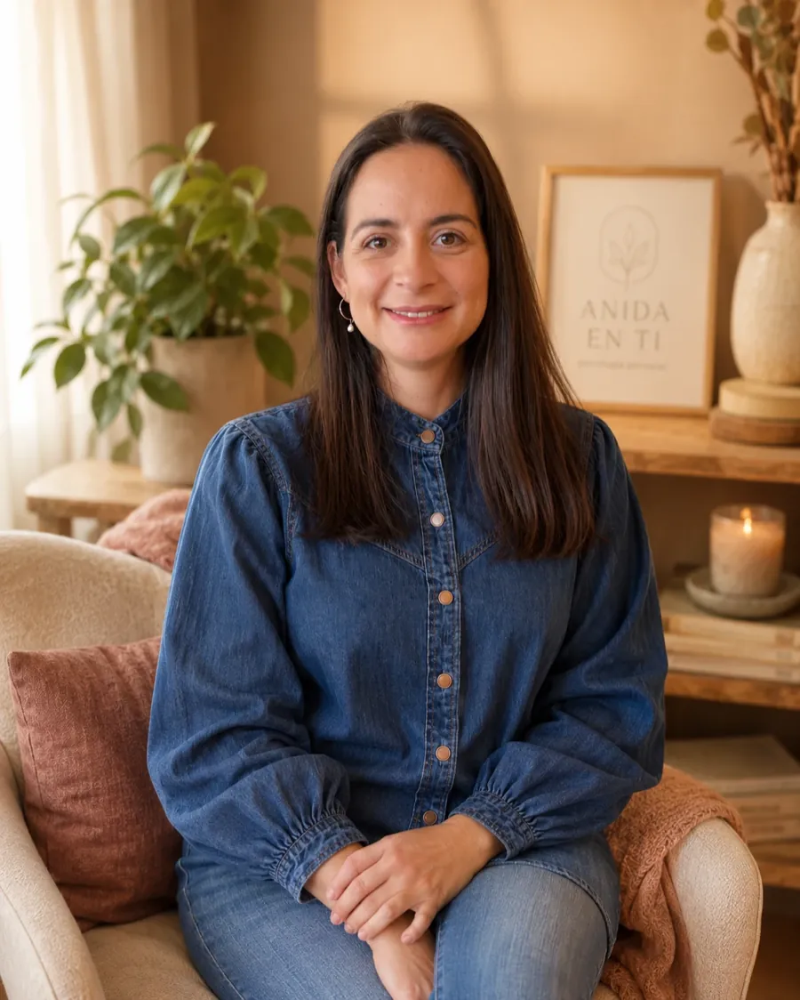

Primero, entender qué está pasando
La primera sesión es para escucharte y ordenar lo que estás viviendo, no para llegar con una receta. A partir de ahí te propongo cómo trabajar.
Titulada de la Universidad del Desarrollo, con formación especializada en salud mental reproductiva y perinatal. Atiendo online, por videollamada, a personas en Chile.

El embarazo y los primeros meses con un bebé mueven al mismo tiempo el cuerpo, el sueño, la pareja, el trabajo, las expectativas y la forma en que te ves. A veces, además, traen una pérdida que el entorno nombra poco.
En medio de eso es difícil saber qué es parte de un gran cambio de vida y qué necesita atención clínica. Algunas cosas se viven como «lo normal» y pesan más de lo que parece; otras asustan más de lo necesario. Me formé en salud mental perinatal para ayudarte a distinguirlo con cuidado, sin minimizar lo que te pasa y sin alarmarte.
La primera sesión es para escucharte y ordenar lo que estás viviendo, no para llegar con una receta. A partir de ahí te propongo cómo trabajar.
Trabajo con enfoques cognitivo-conductual y sistémico, adaptados a lo propio del embarazo, el posparto y la pérdida perinatal.
Puedes hablar de lo que cuesta decir en voz alta: la ambivalencia, el cansancio o lo que no se parece a lo que imaginabas.
Acordamos qué quieres trabajar y revisamos cómo va. Cuando corresponde, y con tu acuerdo, coordino con tu equipo de salud.

Las sesiones son por videollamada, en Google Meet. Solo necesitas un lugar donde puedas hablar con tranquilidad. El enlace llega en tu correo de confirmación, una vez aprobado el pago.
Universidad del Desarrollo.
Práctica clínica en salud mental.
Universidad de Zaragoza.
Especialización en salud mental materna y perinatal.
Universidad de los Andes · Chile.
Con enfoque en la salud mental materna y el vínculo temprano.
Superintendencia de Salud · Registro 598177
Colegio de Psicólogos CL · Registro 12.847
Al terminarla sabrás cómo te propongo trabajar y podrás decidir con calma si quieres continuar.